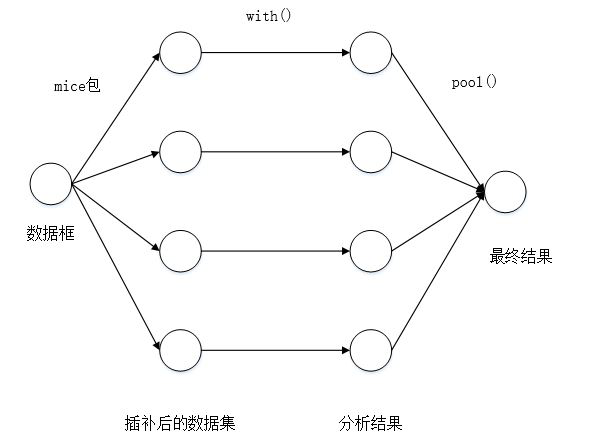

(1) 删除法
函数na.omit()可以删除含有缺失数据的行，运行结果为不含缺失值的数据集：
newdata = na.omit(mydata)
上述代码newdata中存储的是删除了mydata中所有包含缺失值的行的结果，同样的结果可以用函数complete.cases()实现：
newdata = mydata[complete.cases(mydata),]
(2) 均值/中位数/众数插补法
采用Hmisc程序包中impute()函数可以对缺失值进行简单插值，形式如下：
library(Hmisc)
impute(x, fun=median, ...)
x是需要插补的向量。
fun是用于计算插补值的函数名，默认为median,对于数值型对象，默认用中位数（median）作为插补值，也可以将其指定为均值（mean）；对于因子型对象，默认会用出现频率最高的类别作为插补值；除此之外，可以将插补值指定为单个值或向量（如果对象是因子型，则指定字符），也可以用字符串“random”生成随机值进行插补，且这些随机值不是一定相等的；
另外，对于数值型对象，没有直接求众数的函数，需要先计算出众数，再用特定值进行填充。
示例中使用的table()函数和sort()函数用法如下：
table(data),其中data可以为向量、矩阵或数据框等，返回值为data中各个元素出现的频次
sort(data),其中data可以为向量、矩阵或数据框(须指明对哪一列进行排序)，返回的结果为各个元素按一定顺序排列，默认升序排列。
(3)多重插补法
R中可以利用Amelia、mice和mi包来执行这些操作，这里重点介绍mice包中提供的方法。
函数mice()首先从一个包含缺失值的数据集开始，返回一个包含多个（默认为5个）完整数据集的对象，每一个完整的数据集都是通过对原始数据中的缺失值进行插补而生成的；然后，with()函数依此对每个完整的数据集应用统计模型（如线性模型或广义线性模型）；最后，pool()函数将这些单独的结果整合为一组结果。mice包操作过程具体如下图所示:

基于mice()包的多重插补通常符合下述分析过程：
library(mice)
imp=mice(data,m,method,…)
fit=with(imp,analysis)
pooled=pool(fit)
summary(pooled)
mice()函数中,data为数据集；m为生成完整数据集的个数；method为插补方法，默认为pmm(预测均值匹配)，还有其他插补方法，比如norm(贝叶斯线性回归)、norm.boot(基于bootstrap的线性回归)、norm.predict(线性回归预测)、cart(分类回归树)、rf(随机森林)等，在R语言中调用help(mice)可以看到更多可用的方法，并且要注意其中注明的不同插补方法适用的变量类型。
with()函数中，imp是包含m个插补数据集的列表对象；analysis是用于设定m个插补数据集的统计分析方法的表达式括做线性回归模型的lm()函数、做广义线性模型的glm()函数、做广义可加模型的gam()函数和做负二项模型的nbrm()函数，需要注意的是表达式中,～左边是响应变量，右边是预测变量（用+分隔符隔开）。
pool()函数中，fit是包含m个单独的统计分析结果的列表对象；经pool()函数处理过后，结果是包含这m个统计分析平均结果的列表对象。